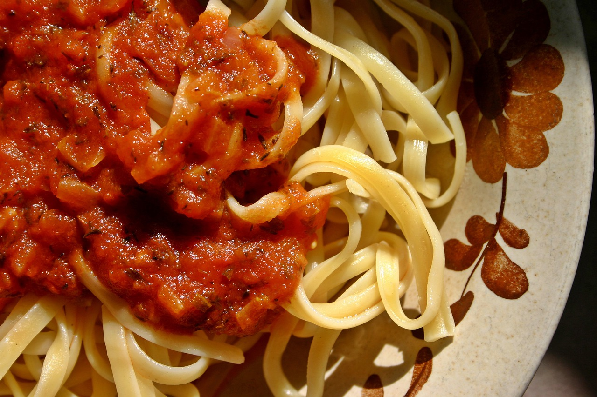

Garlic Tomato Sauce Pasta

Description
If you are a garlic and tomato lover, this pasta surely be your favorite weekday dinner dish. It is quick and simple, and delicious!
Ingredients
- Olive oil (3 tbsp)
- Canned tomato (400cc)
- Garlic cloves (4 pcs)
- Bouillon (1 cube or 2 tsp)
- Sugar (1.5 tsp)
- Dash of salt and red pepper
- Pasta of your choice (for 4 people worth)
- Optional basil leaves
- Parmesan cheese (shredded or ground as much as you like)
Steps
- Slice 2 pcs of garlic.
- Heat a deep pan over a medium heat, and add olive oil and add 1.
- Meanwhile, boil water in a pot for pasta.
- When the garlic started to become slightly golden, add the canned tomato. Keep the heat at medium.
- Grind rest of the garlic, and add to the pan. Also add bouillon, sugar, salt and red pepper.
- When the tomato started to simmer, turn the heat to low.
- Start to cook pasta in the boiled water.
- When the pasta is cooked, turn off the heat of the tomato sauce pan.
- Add basil leaves to the sauce
- Put the pasta and sauce in a plate and add parmesan cheese over it.
- Enjoy.